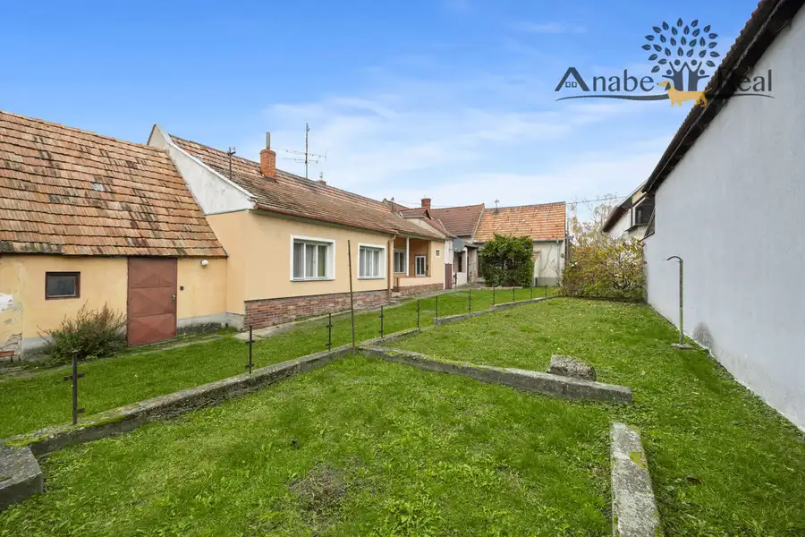

Kúpa · Byt
Súrne hľadáme pre konkrétnych klientov – 2 izbový byt v Bratislave – Ružinov.
Ružinov, Bratislava
220 000 €4 889 € za m²

- Dispozícia2-izbový
- Plocha45 m²
- StavČiastočná rekonštrukcia
- VlastníctvoOsobné
O nehnuteľnosti
Súrne hľadáme pre konkrétnych klientov – 2 izbový byt v Bratislave – Ružinov.Cena do 220.000 eur podľa stavu nehnuteľnosti, dohoda možná.Kontakt:Tomáš Janek, 0903 73 85 99, tomas.janek9@gmail.com, Mgr. Anetta Vlčáková, RSc., 0905 83 33 44, anetta.vlcakova@gmail.com.
Parametre
- Cena vrátane energií
- Nie
- Druh
- 2 izbový byt
- Dátum zverejnenia
- 10. 04. 2025
- Stav nehnuteľnosti
- Čiastočná rekonštrukcia
- Typ
- Kúpa
- Vlastníctvo
- Osobné
- Úžitková plocha
- 45 m²
Kde to je
Ďalšie ponuky
Celá ponukaMohlo by Vás zaujímať
 DomNové
449 000 €Na predaj rodinný dom ul. Pri Suchom mlyne Bratislava-Staré Mesto
Staré Mesto, Bratislava
241 m²
DomNové
449 000 €Na predaj rodinný dom ul. Pri Suchom mlyne Bratislava-Staré Mesto
Staré Mesto, Bratislava
241 m²
 PozemokNové
Cena na vyžádáníNa predaj investičný stavebný pozemok na výstavbu rodinných domov v obci Zálesie okres Senec
Zálesie
2733 m²
PozemokNové
Cena na vyžádáníNa predaj investičný stavebný pozemok na výstavbu rodinných domov v obci Zálesie okres Senec
Zálesie
2733 m²

PozemokNové Cena na vyžádáníNa predaj investičný stavebný pozemok o výmere 2.627 m2 s 3 rodinnými domami Záhorská Bystrica, Bratislava 2627 m²